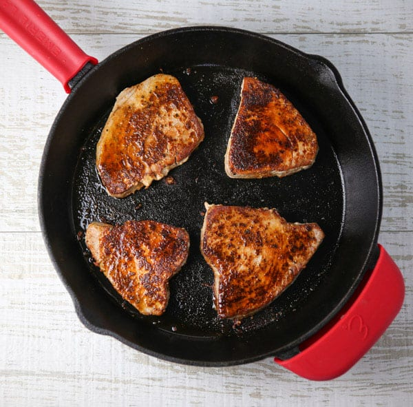

Back to home.
Blackened Tuna
Seasoning from this recipe, cooking instructions from this recipe.

Description
Spicy tuna is a tasty healthy meal. Use the blackened seasoning on other fish or chicken as well. Cook in a cast iron skillet any time of year or grill them in the summer months. Instead of a rambling 2 paragraph description of my childhood and how I learned this recipe, here are the instructions.
Ingredients
- Blackened seasoning
- 2 tablespoons smoked paprika (regular paprika OK but not as good).
- 1 tablespoon cayenne powder (more for spicier taste).
- 1 tablespoon onion powder
- 1 teaspoon garlic powder
- 1 teaspoon ground black pepper
- 1 teaspoon sea salt
- 0.5 teaspoon dried basil
- 0.5 teaspoon dried oregano
- 0.5 teaspoon dried thyme
- 1.5 pounds fresh tuna steaks, 1 inch thick.
- 2 tablespoons olive oil
- 2 tablespoons butter
Cooking Instructions
- Mix blackened seasoning ingredients in a large mixing bowl.
- Generously coat tuna with blackened seasoning on all sides (including 1 inch thick edges).
- Heat oil and butter in large skillet over high heat.
- Place steaks in pan when oil is nearly smoking
- Cook one side for 3 to 4 minutes or until blackened.
- Turn steaks and cook on other side for 3 to 4 minutes or to desired doneness.
- FDA recommends in internal temperature of 145 F for seafood. However, cooking rare or mid-rare is typically safe as long as the surface temperature and duration is appropriately high to kill bacteria.